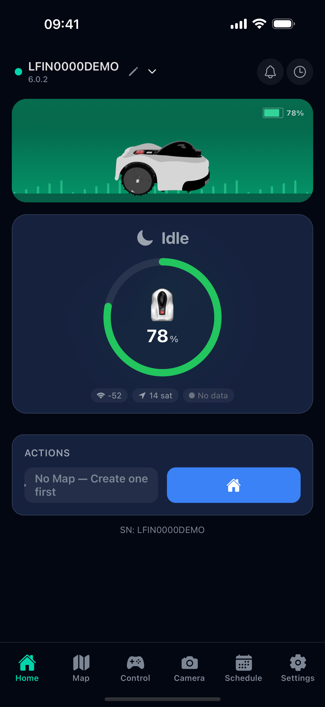
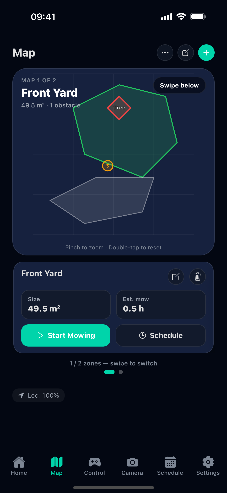
OpenNova replaces the manufacturer's cloud with a server that runs on your own network, so your robot mower and charging station keep working completely offline. The app connects to that local server to show live status, build maps of your lawn, schedule and start mowing, drive the mower by hand, watch its cameras, and keep its firmware up to date.
The Home screen is your mower's dashboard. At a glance you see the connected mower — its name, firmware version and online dot — and its live state. The large ring shows the battery level and current activity (here Idle at 78%), and the chips beneath report Wi-Fi signal, RTK satellite count and localization quality.
The Actions bar starts mowing or sends the mower home. When no map exists yet, it prompts you to create one first.
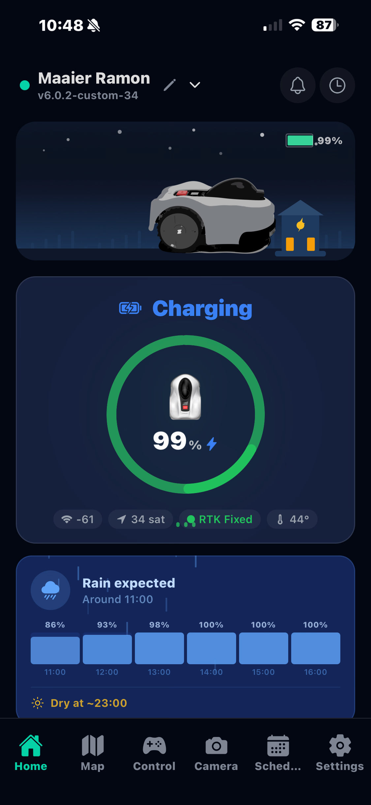
OpenNova checks the local weather forecast and warns you before rain. The Rain expected panel shows the hourly chance of precipitation and when it will be dry again (here, dry at ~23:00), so scheduled runs aren't started on wet grass.
The animated scene at the top mirrors the mower's real state — here parked and charging at the dock at night.
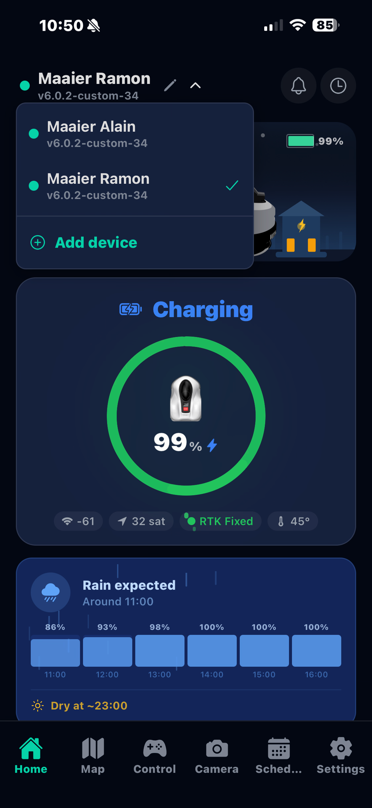
Own more than one machine? Tap the name at the top to open the device picker and switch between them — each mower is listed with its firmware version, and you can add a new device from here.
Every mower keeps its own maps, schedules, settings and history, so switching is instant and nothing gets mixed up.
The Map tab shows the areas the mower has learned. Each zone is drawn as a polygon with its size and any no-go obstacles — here a Tree marker inside the 49.5 m² Front Yard. The card below shows the area size and estimated mowing time and offers one-tap Start Mowing or Schedule.
Pinch to zoom and double-tap to reset the view. The localization readout confirms the mower knows where it is.
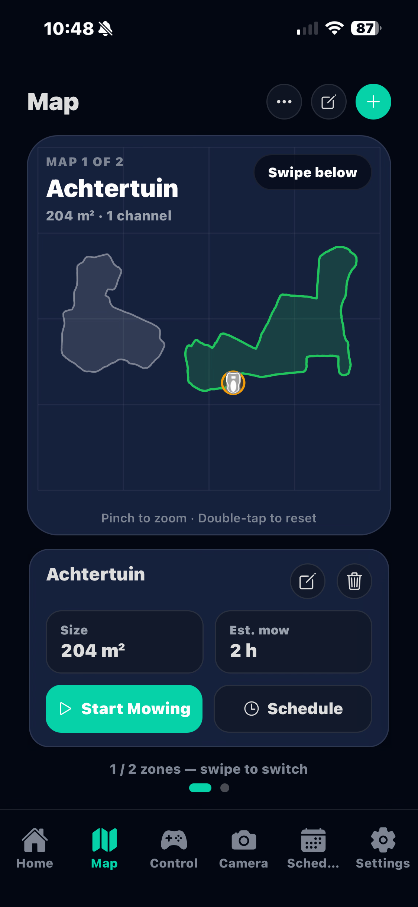
When several areas are mapped, swipe between them — the header shows Map 1 of 2. Each zone can be started, scheduled, renamed or deleted on its own, and shows its size and an estimated mowing time.
The mower icon marks the charging dock relative to the boundary, so you can see how the area sits around the base.
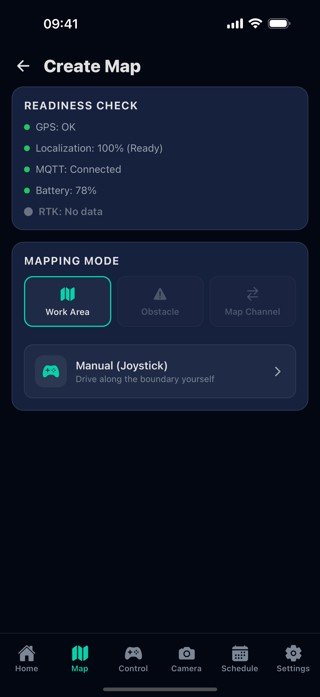
Before mowing, the mower needs a map of your lawn. The Create Map screen first runs a readiness check — GPS, localization, MQTT link, battery and RTK — so you know the mower is ready to record a boundary.
Then choose a mapping mode — Work Area, Obstacle or Map Channel — and drive the boundary yourself with the joystick, or let the mower map automatically.
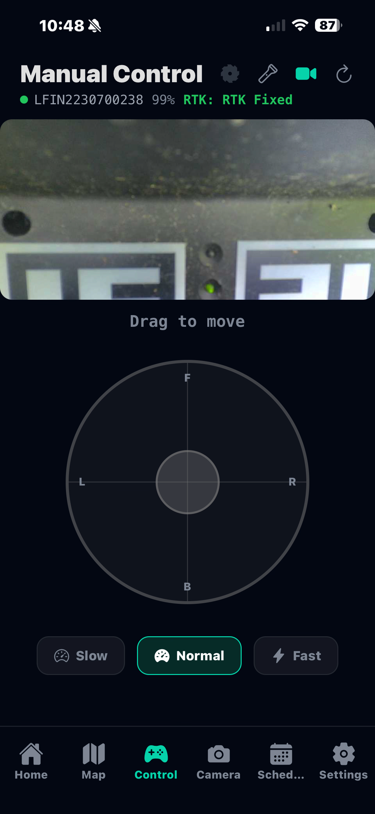
Manual Control lets you drive the mower yourself. Drag the on-screen joystick toward Forward, Back, Left or Right and pick a Slow, Normal or Fast speed. A live camera feed at the top helps you see where you're going, and the header confirms the mower is connected with an RTK Fixed GPS lock.
Use it to reposition the mower, or to drive the boundary while mapping.
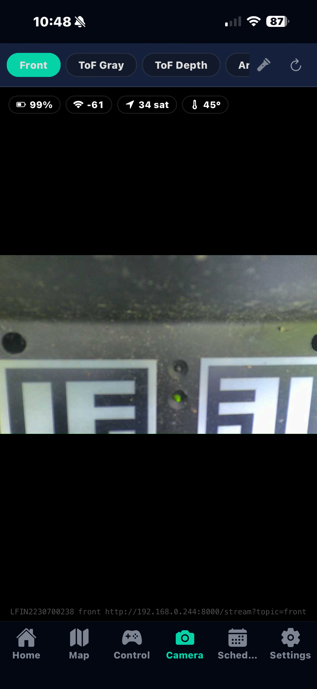
The Camera screen streams live video from the mower. Switch between the available feeds — Front colour, ToF Gray, ToF Depth and the ArUco marker view used for docking. The chips show battery, Wi-Fi, satellite count and heading.
The live camera service runs on OpenNova firmware on the mower.
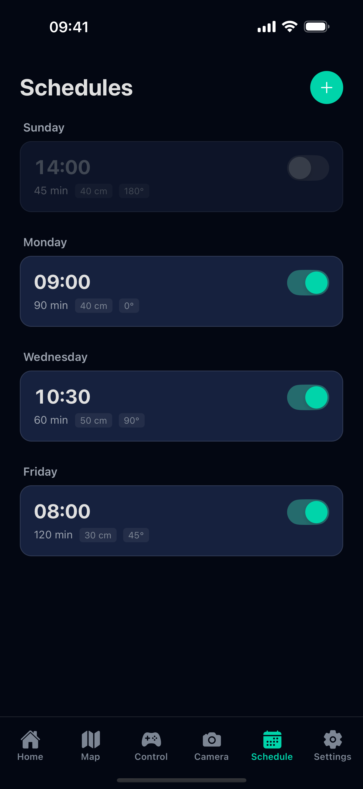
Schedules automate mowing. Each entry shows the day, start time and duration, plus the cutting height and path direction it will use, with a switch to enable or disable it without deleting it.
Tap the + button to add a new schedule.
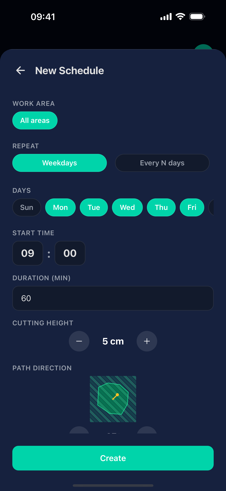
When creating or editing a schedule you choose the work area (or all areas), the repeat pattern (specific weekdays or every N days), the days, the start time and duration, the cutting height, and the path direction the mower follows.
Tap Create to save it to the list.
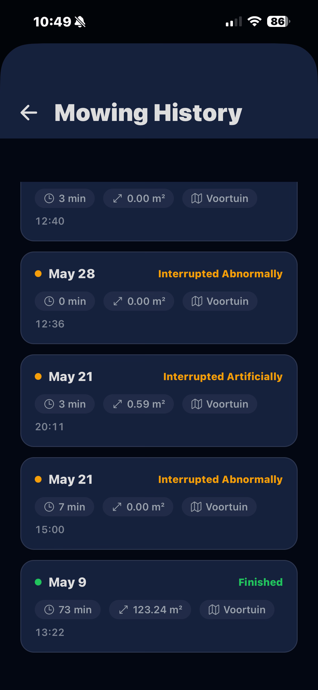
A log of every mowing session — the date, the outcome (Finished, Interrupted Artificially when you stopped it, or Interrupted Abnormally on an error), the duration, the area covered and which map was used.
Handy for tracking coverage over time and for diagnosing why a run stopped early.
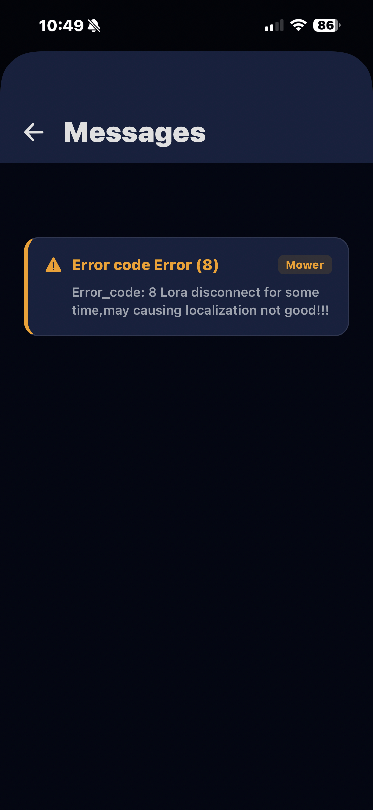
The Messages inbox collects alerts from the mower and charger. Each card shows the source and a plain-language explanation — here an Error 8 (LoRa disconnect) that can affect localization.
Important alerts are also pushed to your phone as notifications, so you don't have to keep the app open.
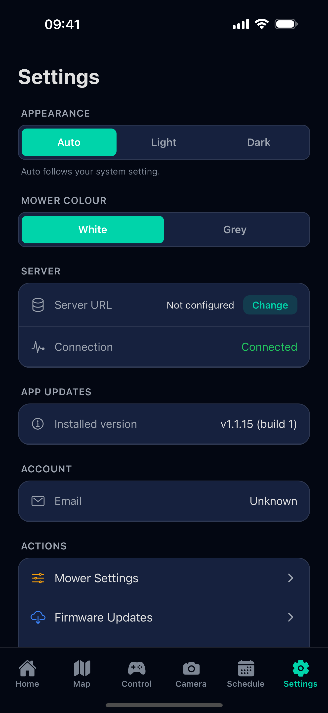
App settings. Choose the appearance (Auto, Light or Dark) and the mower colour shown on the dashboard, see or change the local server URL and its connection status, and check the installed app version and your account.
The Actions list jumps to Mower Settings and Firmware Updates.
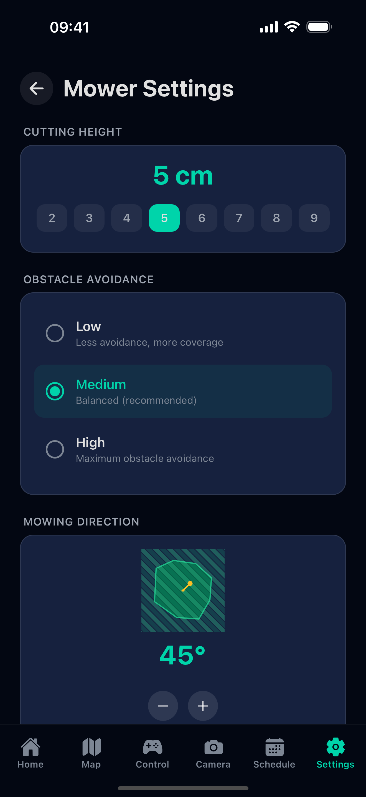
Hardware settings sent to the mower: the default cutting height (2–9 cm), the obstacle-avoidance sensitivity (Low for more coverage, Medium for a balanced result, High for maximum avoidance) and the default mowing direction.
These become the defaults used when you start a job or build a schedule.
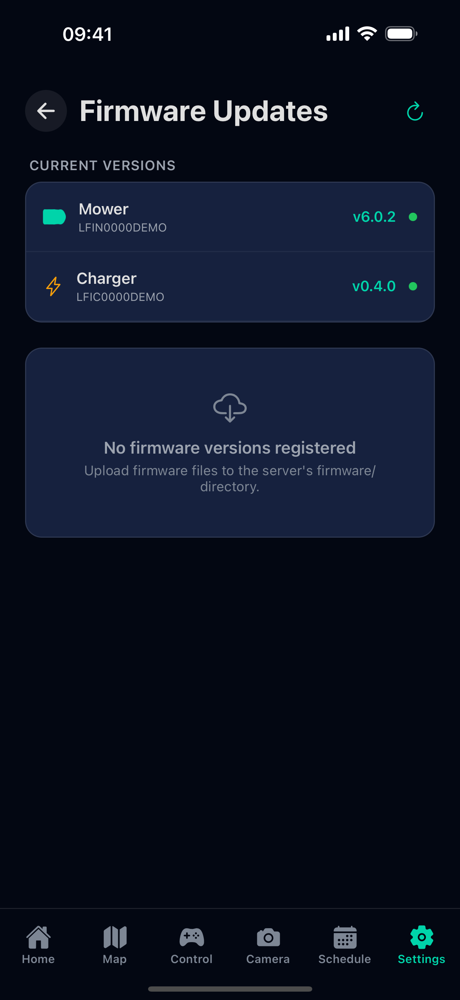
Firmware Updates shows the current mower and charger firmware versions and their status. Firmware uploaded to your local server appears here and can be installed over the air — no cables, no manufacturer cloud.
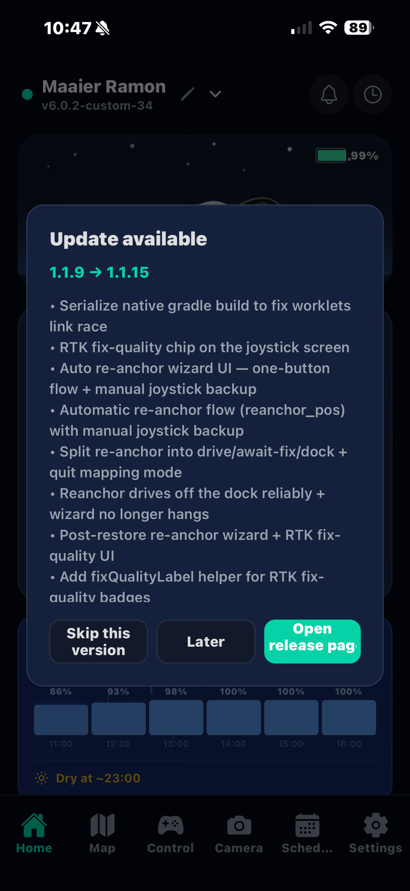
When a newer app version is available, OpenNova shows the changelog and lets you open the release page to update. You can skip a version or be reminded later.